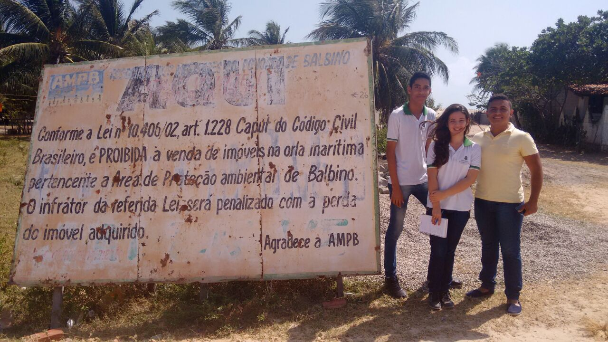

Bem-vindos!
O Balbino é uma comunidade litorânea localizada no município de Cascavel-CE, formada por uma história rica em valores culturais que está sendo esquecida pelos próprios moradores. Sua história inicia-se com a pesca artesanal e a relação entre o homem e o mar, atividade predominante na região. Devido a ganância de algumas pessoas inescrupulosas, por pouco os moradores da comunidade do Balbino não perderam suas terras, num evento criminoso conhecido como “Balbino em chamas”. Apesar disso a comunidade ainda não recebe o devido reconhecimento por sua contribuição para a cultura local. Tal evento mesmo tendo marcado a vida dos moradores não apagou as chamas da memória que ainda se mantém viva tento na arte como no cotidiano da população da região.

Relevância do Projeto
Partindo do pressuposto de que as comunidades devem zelar pelo resgate de sua história e chamar para si a responsabilidade dos bens de interesse local, o trabalho aborda a questão das políticas públicas e sociais de preservação dos patrimônios culturais e naturais. Promovendo uma maior divulgação da grande riqueza natural e sociocultural do Balbino para a sociedade em geral, com a continuação desse trabalho mais pessoas mudarão a mentalidade em relação a suas raízes e a própria identidade cultural.

Contatos
Em caso de dúvida, crítica ou sujestão construtiva entre em contato com: balbinoprojeto@gmail.com
Contatos
Essa é a nossa pagina no facebook, entre e conheça mais sobre o nosso projeto: Projeto Balbino
{kind=link}
{kind=link}
{kind=link}
{kind=link}